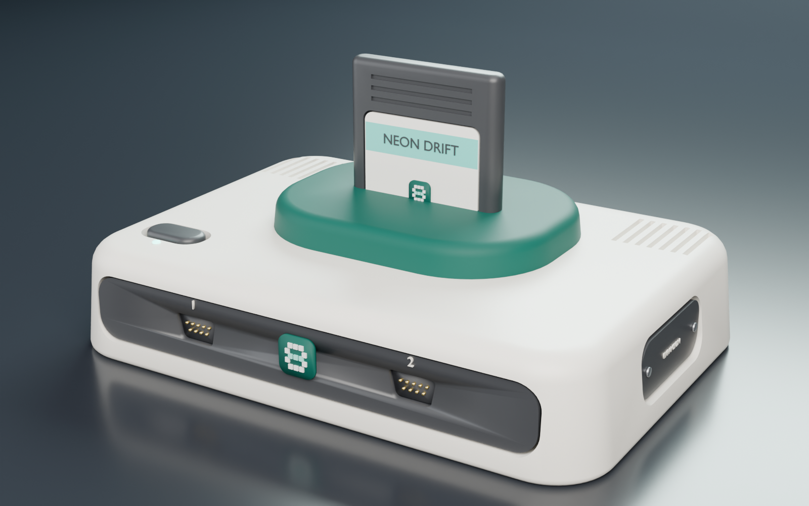
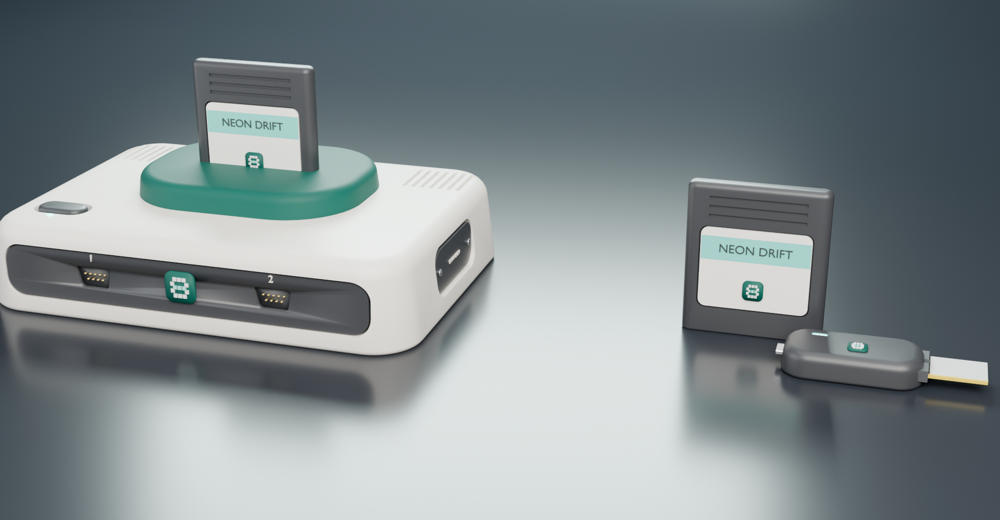
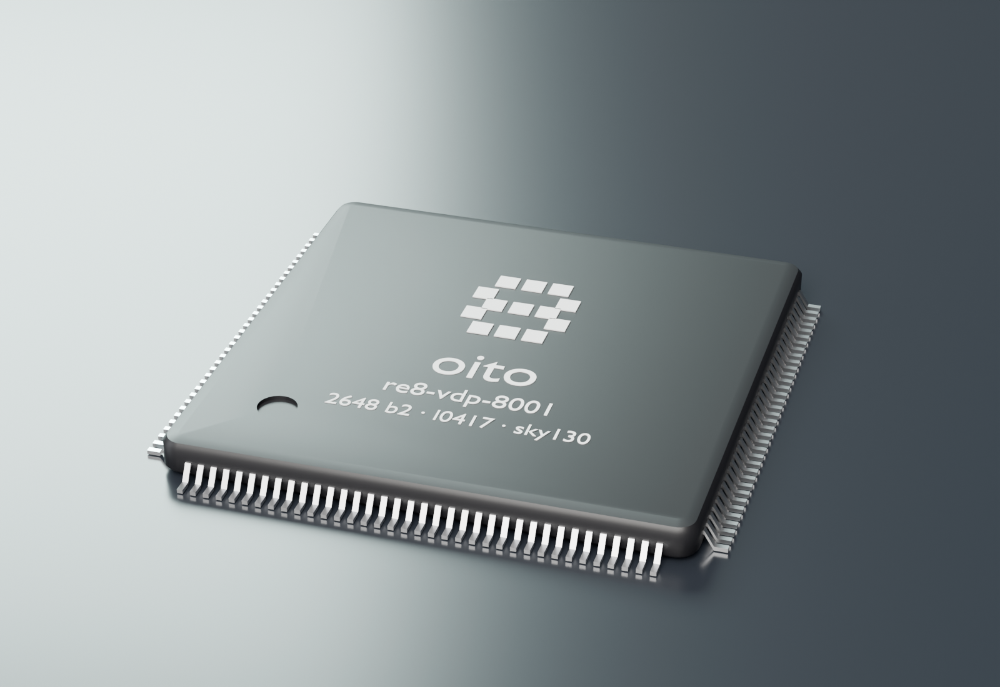
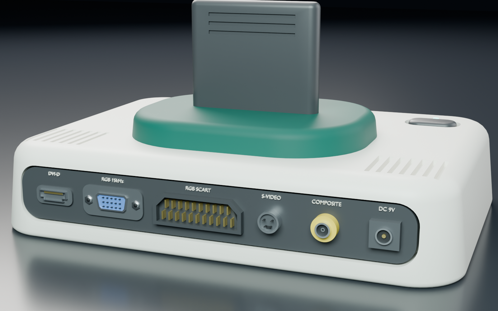
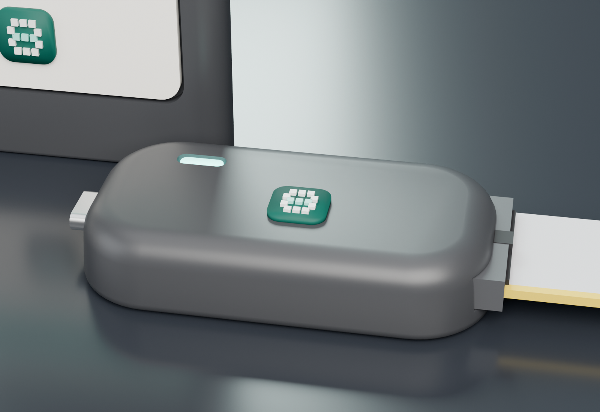
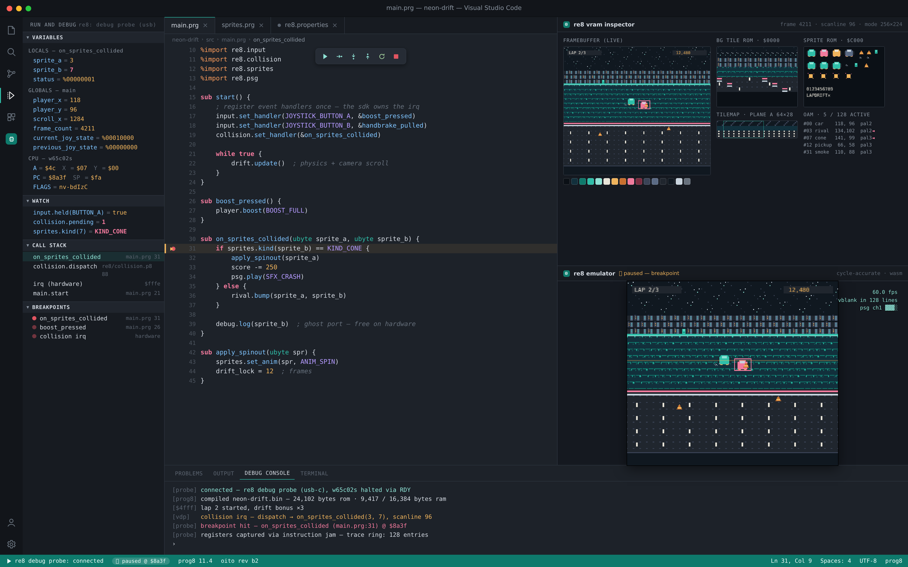

the re8 console
A boutique, ground-up 2D console that marries the zero-emulation, deterministic architecture of the 8-bit era with the pixel-pushing muscle of early-90s arcade silicon — built entirely from factory-fresh components and one custom chip.

Built like an 8-bit machine. Pushes like an arcade board.
re8 sits deliberately between two eras: the lean, fully-understood bus architecture of the NES and PC Engine, and the raw pixel-pushing muscle of a 1990s arcade PCB. Every chip on the board is in active production today — nothing is sourced from dwindling New Old Stock — so the platform you build for is the platform that ships, for as long as the fab lines run.
◆Zero-emulation
A bare-metal 6502-family core and discrete custom silicon — no soft-cores, no interpretation layer between your code and the hardware.
◆Factory-fresh BOM
Every part, from the CPU to the SRAM, is a currently-manufactured component you can order today — not a finite stash of vintage stock.
◆Do it in hardware
Text, the mouse pointer, hit-testing, controller protocols, keyboard decoding — all handled by the chip, so the CPU stays free for your game.
◆Modern SDK
A structured language (prog8), an event-driven library, a hardware debug probe and a WASM emulator bring 2020s ergonomics to an 8-bit bus.
What's in the box
A quick look at what re8 puts on your screen, through your speakers, and in your hands — no engineering degree required.
Graphics
- Two native resolutions — 256×224 and 320×224 — both progressive 240p at 60Hz.
- 64 on-screen colors at once, chosen from a 4,096-color master palette.
- Two independent scrolling backgrounds plus 128 sprites (32 per scanline), with hardware collision detection built into the chip.
- A mini-blitter for full-screen effects, destructible terrain and procedural graphics.
- A dedicated text layer floats above the game — crisp menus, dialogue and HUDs that cost you no sprites at all.
Sound
- 16 voices, all playing at once — far beyond a classic chiptune console.
- 4 enhanced PSG channels (3 pulse + noise) with envelopes and sweep for classic bite.
- 8 wavetable voices for rich, evolving instruments you design yourself.
- 4 sample channels — real drums, speech and stingers streamed straight from the cartridge.
- Out via optical S/PDIF for pristine digital audio, or the analog line-out and SCART.
Play it your way
- Two front DB9 ports for two-player action, compatible with Sega Genesis / Mega Drive pads — 3-button and 6-button, vintage or modern clones.
- Plug in a PS/2 keyboard through a simple passive adaptor. Every existing joystick game becomes keyboard-playable automatically — the console maps the keys for you.
- Plug in a PS/2 mouse and the console draws and moves the pointer itself, in hardware. Strategy, simulation and point-and-click games finally have a home on a machine like this.
- Sub-frame input response on every device.
Cartridges & saves
- Real parallel flash cartridges up to 1 MB — code runs straight from the cart with no loading screens.
- Battery-free saves. Saving carts use FRAM, so your progress doesn't die with a coin cell in fifteen years.
- An optional SD cartridge plays digitally-distributed games and carries firmware updates.
- Boots in a moment to a real firmware — logo, self-test, and a friendly screen if a cart is missing or damaged.

A whole machine you can hold in your head
One CPU, one custom chip, and memory you can count on your fingers. The point of re8 isn't scale — it's that a single developer can understand every cycle, every byte and every wire, and still ship something that looks and sounds like an arcade board.
W65C02S, running flat out
A fully-static, in-production CMOS 6502 clocked at exactly one third of the master clock, so every scanline is an exact 455 CPU cycles. Deterministic timing you can actually plan against.
System RAM
Fast asynchronous SRAM on the CPU bus. Small on purpose: the SDK enforces the budget at compile time, so you find out at build, not at 3am.
Video RAM
On a private bus straight into oito, so graphics fetches never fight the CPU for the main bus.
Cartridges that behave like memory
Games live on parallel NOR flash and execute in place — there's no load step, no decompression stage, no streaming budget. A console-side mapper gives you a fixed 16 KB window for your engine and a switchable window for everything else, up to 1 MB per cartridge.
Because the mapper lives in the console rather than the cartridge, a game cart is a single chip on a two-layer board — which is what keeps small print runs viable.
Saves that outlive the hardware
Saving cartridges carry FRAM — nonvolatile, effectively unlimited write cycles, and no battery. The classic retro failure, where a dead coin cell takes a childhood save file with it, simply cannot happen here.
Digital titles on the SD cartridge write their saves to the card instead, so both distribution routes behave the same way to the player.
Meet oito — the chip that does the work
Every distinctive thing about re8 lives in one custom ASIC, fabricated on an open 130 nm process. oito is the graphics processor, the sound chip, the cartridge mapper, the input controller and the system glue — and it deliberately takes on jobs that other machines leave to the CPU.

◆Two background planes + 128 sprites
Two independently scrolling 512×256 playfields with per-tile priority and flipping, plus 128 hardware sprites (32 per scanline) in sizes from 8×8 to 32×32. Sprites carry their own priority, so foreground detail can pass in front of one plane and behind another.
◆Hardware collision
oito compares opaque sprite pixels as it draws the line and reports the exact pair that touched — no bounding boxes, no per-frame CPU sweeps, no false positives on transparent pixels.
◆A text layer, free of charge
A dedicated character layer composites above everything else, with its own font in the chip. Menus, dialogue boxes, subtitles and debug overlays cost zero sprites and zero tile budget — and a game can load its own typeface. 40 columns, or 80 in condensed mode.
◆A mouse pointer drawn in silicon
Give oito a cursor graphic once and it owns the rest: reading the mouse, moving the pointer, clamping it to the screen and compositing it above every layer. Your game just receives move and click events.
◆Ask what's under the pointer
Hardware hit-testing reports which sprite and which background tile sit beneath the cursor. What would be a per-click search loop on other machines is a register read here — the difference between a sluggish strategy game and a responsive one.
◆16-voice audio unit
PSG, wavetable and sampled voices on one die, mixed internally at ~48 kHz and delivered as clean digital audio. Samples stream directly from the cartridge, so speech and real drums don't eat your RAM.
◆Mini-blitter
A VRAM-to-VRAM engine for copies, fills and masked draws that runs alongside the display, enabling destructible terrain and procedural graphics without hand-rolled CPU loops.
◆Input, protocols included
The Sega 6-button handshake and the PS/2 keyboard and mouse protocols are all implemented in hardware. Game code reads buttons, characters and pointer coordinates — never wire protocols.
oito is synthesised with an open-source flow against the SkyWater 130 nm PDK and packaged as an LQFP-144. Full register map, data formats and timing →
Every screen, every era — at the same time
One digital pipeline inside oito feeds every output simultaneously. No switches, no menus, no re-plugging: connect a 1970s portable and a 2026 OLED at once and both show a picture.
| Output | Connector | Best for |
|---|---|---|
| Digital video | HDMI-type | Any modern TV or monitor — a fixed, standard 1080p60 picture, integer-scaled so pixels stay square and sharp. |
| RGB SCART | Euro-SCART | European CRTs, PVMs and premium upscalers — the enthusiast's choice. |
| Analog RGBHV | DE-15 | 15 kHz-capable monitors and upscalers such as the OSSC or RetroTINK. Not standard VGA timing. |
| S-Video | 4-pin mini-DIN | A noticeably sharper picture on any classic set that supports it. |
| Composite | RCA | Plugs into essentially any television ever made. |
| Digital audio | TOSLINK | Optical S/PDIF into a soundbar or AV receiver, plus analog line-out and SCART audio. |

◆60Hz everywhere
re8 runs at 60Hz worldwide. There is no PAL slowdown, no region-locked timing, and no 50Hz version of a game that plays 17% slower than the developer intended.
◆Pixel-art-first scaling
The digital output uses nearest-neighbour, integer scaling only. No blurring, no interpolation, no smearing of the art you drew pixel by pixel.
◆240p, properly
Progressive 240p — never interlaced — so scrolling stays rock-solid on a CRT and clean through a modern upscaler.
Pads, keyboards and mice — all on two ports
re8 takes ordinary Sega Genesis controllers, and the same two ports accept a PS/2 keyboard or mouse through a passive adaptor — no powered dongle, no USB stack, no firmware to flash. It's what turns a console into a machine that can also run strategy games, simulations and text adventures.
◆Genesis pads, both kinds
3-button and 6-button pads, vintage or modern reproductions. The console performs the full 6-button handshake itself and tells the game which pad it found.
◆Keyboard, and every game supports it
The console maps arrow keys and letters onto the joypad registers below the game — so titles written years earlier become keyboard-playable with no patch and no cooperation from the developer.
◆Mouse, drawn by the console
The pointer is composited by oito above every layer. Games get coordinates and clicks; nobody spends sprites or CPU time drawing a cursor.
The re8 edition accessories
Three peripherals designed with 8BitDo, finished in the re8 palette. Each ships with a 2.4G wireless receiver shaped as a Genesis-style plug — it drops into either controller port, and for the keyboard and mouse it speaks the console's native PS/2 protocol, so oito handles the device directly in hardware.


◆One receiver, either port
The dongle is a Genesis-shaped plug, so it goes into the same DB9 port a pad would use. No adaptor, no console-side setting beyond choosing the port's mode.
◆Wireless, but native
The receiver presents the keyboard or mouse to the console exactly as a wired PS/2 device would — so oito decodes scancodes and moves the pointer in hardware, with no driver and no CPU cost.
◆Finished in re8 colours
Cream shells with brand-teal accents, matched to the console. The pixel-eight mark sits above Start on the pad, and on the shell of every receiver.
Why this matters
Genres that never fitted an 8-bit console — 4X and grand strategy, city and colony builders, point-and-click adventures, tycoon and management games, even a BASIC-style prompt — need a pointer and a text field far more than they need sprites.
re8 provides both in hardware, so those games are natural to write rather than heroic.
Honest limits
There are two ports, so a keyboard or mouse occupies one of them: joystick + keyboard, joystick + mouse, or keyboard + mouse — not all three at once.
Devices are PS/2, not USB. The adaptor is passive wiring, and a port is set to keyboard or mouse mode from the console's own settings screen.
A window into the running machine
An unpopulated 40-pin header on the board exposes the entire CPU bus and the chip's JTAG interface. Fit the connector and the re8 debug probe turns a console with no operating system into something you can single-step.

◆Hardware breakpoints
The probe watches the address bus and halts the CPU on the instruction you named — no debug code in your ROM, no performance cost, and the game runs at full speed right up to the moment it stops.
◆Single-step a static CPU
Because the 65C02 is fully static, the clock can be stopped entirely and advanced one cycle at a time with the machine's state perfectly preserved.
◆Develop without a cartridge
A writable dev cartridge is filled directly by the probe over the header, so the edit-build-run loop never involves burning a chip.
Write structured code. Ship native 6502.
re8's SDK language is prog8 — a structured, Python-flavoured language purpose-built for the 6502 family, compiling straight to tight assembly with no runtime and no garbage collector. The library above it is event-driven, and the hardware underneath it removes most of the work that makes 8-bit development tedious.
◆Static by design
No heap, no dynamic arrays, no garbage collector. Every variable has a fixed address at compile time, and the build fails if you exceed the RAM budget — you learn at build time, not at 3am.
◆Zero-overhead calls
Arguments live in static cells rather than on a stack, so a call often compiles to a single STA. Ordinary subroutines are non-reentrant as a result — an honest reflection of what the silicon does.
◆Dead-code elimination
Unused library routines never reach the ROM. Link only the input handlers and you pay only for the input handlers.
The hardware does the boring parts
Three things that normally consume weeks of an 8-bit project are handled by oito, and reach your code as ordinary events.
◆Text without a tile engine
Print to a character layer that floats above the game. No font blitting, no tile allocation, no sprite budget — and dialogue boxes are a rectangle of opaque cells, drawn by the chip.
◆A cursor you never draw
Set the pointer graphic once. oito reads the mouse, moves the pointer, clamps it and composites it. You handle on_move and on_button — nothing else.
◆Click-to-object, for free
Hardware hit-testing tells you which sprite and which map tile are under the pointer. No coordinate maths, no scroll compensation, no per-object loop.
A real debugger, on a machine with no OS

◆console.log(), for real hardware
Address $4FFF is a write-only "ghost port" with no backing memory. Writing to it costs 4 cycles and does nothing unless a probe or the emulator is listening — so debug logging can ship in production builds while streaming live text to your editor during development.
◆Source-level debugging
The toolchain produces a flat binary with no debug format of its own, so the SDK synthesises the symbol information VS Code needs — giving you breakpoints and stepping against your original prog8 source lines.
◆Live VRAM inspector
A scrollable grid of every loaded tile with palette overlay, hover-to-inspect addresses, the sprite list, and active-scanline highlighting showing what oito is scanning out right now.
◆Emulator in the editor
A hot-reloading WASM emulator runs inside a VS Code panel for instant iteration, sharing the same debug hooks as the physical probe — and an immediate console lets you poke memory or call game functions on the halted machine.
The whole machine, written down
Everything on this page is backed by a complete normative specification — the document an implementer would build the hardware or an emulator from. It carries the full register map, data formats, raster and bus timing, the bill of materials with real part numbers, the file and tool ABI, and the conformance contract.
◆Register-level detail
Every register with its reset value, bit fields, read/write side effects and unmapped behaviour — plus pseudocode for the blitter, the compositor and all sixteen audio voices.
◆Real parts, real timing
Named, orderable components with voltage domains and margins; exact clocks, raster structure and bus arbitration.
◆Honest about what's unproven
The specification lists, by name, everything still to be validated on real silicon before tape-out — rather than quietly implying it's all settled.
Build for hardware that respects the constraint.
re8 is a real, manufacturable platform — not a spec-sheet thought experiment. Factory-fresh parts, an open-process custom chip, and a toolchain built specifically so an 8-bit machine doesn't have to feel like 1985 to develop for.